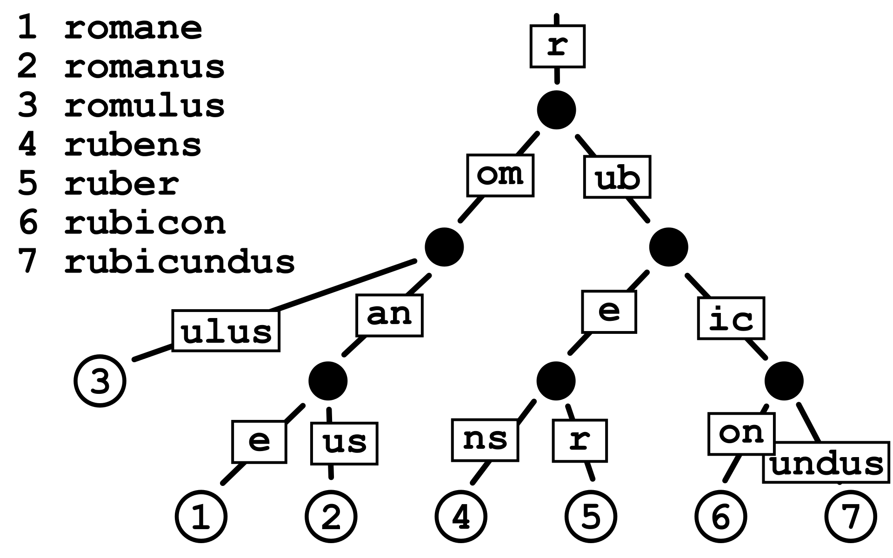
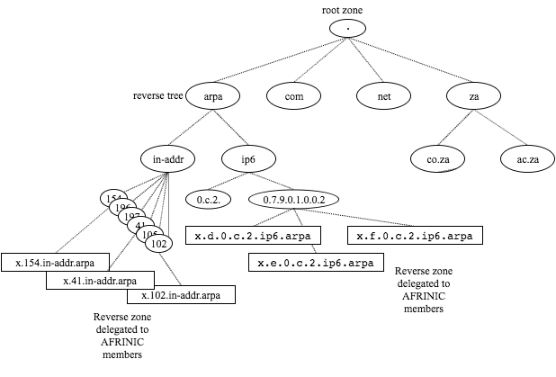
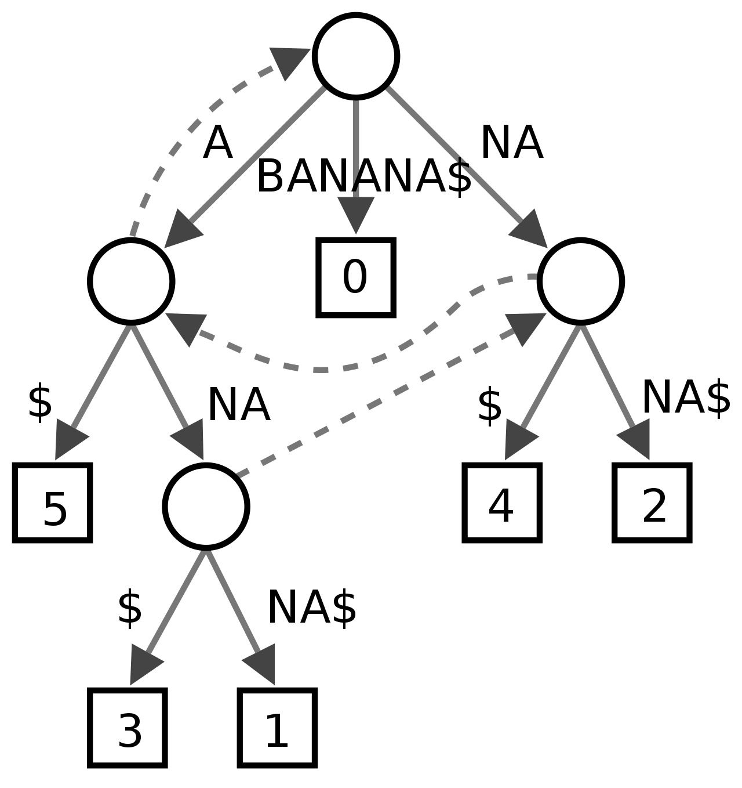
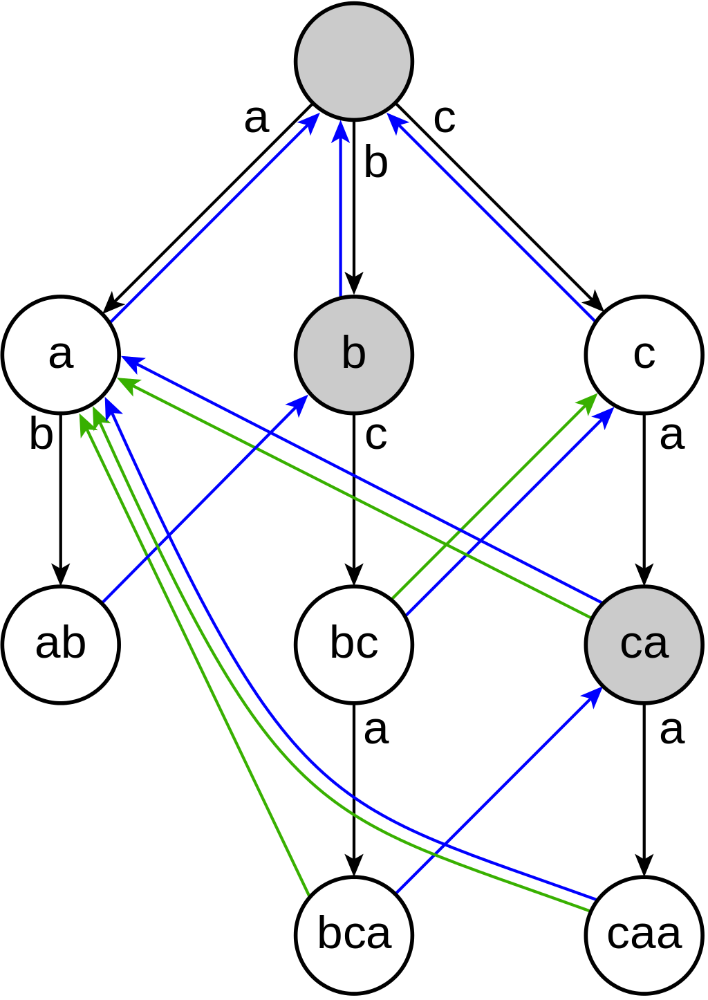

还在嘴硬？Trie树没你想得那么简单
Trie树，又称前缀树或字典树，在数据结构领域赫赫有名。相信多数人认识Trie的机缘，要么是通过OI，要么是在工作中遇到过Trie发光发热的场景。传统Trie结构并不复杂，但其实现与变种却是八仙过海各显神通。本文从Trie讲起，紧紧抓住核心的性能与空间占用，对Trie主流的几种实现进行了阐述，同时自己也真实地跑一遍benchmark，对各家吹逼的论文去伪存真。
还在嘴硬？Trie树没你想得那么简单
Trie树，又称前缀树或字典树，相信对于大部分业界同仁来说并不陌生。尽管Trie树在数据结构领域称得上赫赫有名，但科班教材却鲜有提及，相信多数人认识Trie的机缘，要么是通过OI，要么是在工作中遇到过Trie发光发热的场景。
对Trie有一定了解的同学，往往会觉着：“不就是一种简单易懂的数据结构吗，有啥好长篇大论的？”实话实说，作为端茶倒水型OI老混子，我也一度这样认为。然而，最近工作中在研究搜索联想词(suggestion)背后的各种索引时，意外的发现Trie大有门道，它的工业级实现也绝不像OI的模板那么随性（只是个演示demo，生产环境没人用）。
本文会从最基础的Trie谈起，围绕性能与空间占用，一步步抽丝剥茧层层递进，对业界知名的几种Trie实现进行详细展开，并尝试解读为什么会这样设计，知其然，并知其所以然。然后，再给出基于业界知名的开源Trie实现库所进行的benchmark数据，并进行分析。最后，对Trie的常见应用以及衍生的数据结构进行介绍。
字典树/前缀树/Trie
顾名思义，字典树，是一个像查字典一样的树形结构，一般来说，我们会选择字符串作为键(key)，并非像二叉搜索树那样直接保存到每一个树节点，在字典树中，键会被打散分布于一条树链上。
例如，我们用键集：{"romane","romanes","romanus","romulus","rubens","ruber","rubes","rubicon","rubicundus","rubric"}，构建一棵传统Trie：
如图所示，从根节点开始，任选一条到叶子结点的树链，这条路径上的字符所组成的字符串对应了集合中的特定键，此树一共有10个叶子节点，分别对应10个键。图中的叶子结点是个哨兵，它不存储任何字符，只是单纯代表字符串的终止。
Trie最基础的应用就是字符串的查找——判断某个字符串是否在字典中。当我们需要查找某个字符串是否存在于key集时，只需要逐字符match，层层递进，如果在遍历到最后一个字符时可以命中叶子节点，那么就代表它存在，否则在中途中任何一步没能match，就代表不存在。
正因为这一典型应用，Trie又叫字典树。实际上，除了判断字符串是否存在，我们还可以在这个基础上，利用Trie做词频统计。只需要在每个叶子节点的值域存储一个计数器即可。词频统计正是Trie的常见应用场景之一。
这样的结构就像是一棵K叉树，我们在检索字符串的过程中，途径每层都在做同一件事：判断当前的父节点是否存在待检索字符所对应的子节点，如果有就递归向下，没有就终止。我们可以发现，具有相同前缀的字符串，它们在树中会共享非叶子节点，相比于用哈希表去存储全量键集，Trie得益于共享前缀的特性，体积的缩小肉眼可见。
哈希表当然可以完成判断字符串是否在字典中的任务，查询的时间复杂度是O(1)，这意味着它的查找很快，显然，这是用空间换来的。
相比于哈希表，Trie的查询速度显然劣势，Trie牺牲了时间去换取了大量的空间节省，它的时间复杂度是O(len)，其中len表示查询字符串的长度。当然，时间复杂度反应的只是曲线随数据规模增长的快慢程度，真实的查询性能差异需要用具体的键集跑真实benchmark才能知晓。对于Trie树来说，真正影响查询速度的，实际上有很多因素。另一方面，我们总说相比于哈希表，Trie树更省空间，那么究竟能省多少呢？实际上，这又取决于Trie的具体实现。
状态转移与DFA
实际上Trie的本质是一个DFA（确定有限状态自动机），拆分的键字符可以看作是边，而节点到子节点的过程就是一种状态转移（第i行第j列的值表示在状态i的情况下输入字符j的时候的目标状态）。比如，维基百科对Trie的几何描述图如下：
键标注在节点内，边上的字符表示状态的转移，右下角带有数字的节点表示这是一个终止节点（不同于哨兵节点的表达方式，在每个树节点可以用一个标记来代表他是否是终止节点）。另一方面，键实际上不需要显式地保存在树节点中，上图只是为了方便理解Trie DFA的本质而做的演示。
到此，我们就来到Trie树中最核心的问题：每个树节点要如何维护它可能存在的K个儿子呢？K的上限值又是多少呢？
K与字符集
我们先来回答比较简单的第二个问题：K的上限值。
容易想到，K取决于键集中所有不重复字符的数量，因此，最终看的是构成键集的成分。比如，对于全部小写英文字符构成的键集，K就是26；扩展到ASCII，K的上限就是128（实际上很多控制字符一般不会出现）。
而日常需求中，比如搜索联想词场景，构成键集的都是一些中英文混杂字符串，汉字成千上万，如果我们维护万级别的状态转移表，不论采用何种表达方式，都无疑是一场灾难。那么退一步想想，我们平时存储这些中文字符串时，都是如何存储的呢？这取决于具体的编码方式。比如对于UTF8，不同的字符可能需要1~3个字节来进行编码，我们在构建Trie树时可以按字节作为步长来拆分键，如此，K的上限就是256。
举个例子，比如对于键QQ号码，它被UTF8编码为0x51 0x51 0x53 0xf7 0x78 0x01，字符Q占一个字节，编码为0x51，后面的汉字则各占两个字节。当我们构建Trie时，就会形成一条由6个节点构成的树链（不考虑哨兵）。
显然，我们通过编码解决了K可能过大的问题，而代价就是增加了树的深度，速度变慢。实际上，编码只是一种具体手段，它的本质是一种叫做“字母表缩减”的思想，通过控制字母表的大小来限制K的量级，在速度与量级上做trade off。
转移矩阵与链式存储
再回到第一个问题：树节点如何维护它的儿子。
DFA通常用转移矩阵来表示，行表示状态、列表示输入字符，行列共同表示状态的转移。这就意味着树上每个节点都要维护一个规模为K的数组，此时构成的Trie如下图：
1 | |
这种稀疏数组的实现方式查询效率很高，途径每个节点做查询都是O(1)的时间复杂度，但由于稀疏的现象，空间利用率很低。比如上图中的Trie，对于K=26的情况，仅仅索引4个单词，就消耗了肉眼可见的空间。
当然，我们也可以放弃稀疏数组，采用链式来表示状态转移：
1 | |
无需K规模数组，每个节点只需要保存两个指针即可：一个指向兄弟(sibling)、一个指向儿子(children)。这下彻底稠密了，空间利用没有丝毫的浪费，但代价就是每个节点的状态转移都需要做一轮线性查询，即O(K)的时间复杂度。此时，字典树的查询时间复杂度变成：O(K*len)。
我们从一个极端，步入了另一个极端（我叫二极管(bushi)）。
Trie空间优化之道
那么，有没有什么折中的方案，让我们既能节省空间存储，又能兼顾速度呢？
答案当然是有的，而且是八仙过海，各显神通。
字母表缩减大法
最容易想到的就是利用上一节中提到的字母表缩减大法：我们可以按比特来拆分，比如以4bit-16字符的字母表来替代8bit-256字符的字母表，空间存储变为了原本的1/16，代价是树的深度增加一倍，查询耗时变为原本的2倍。
本质上来讲，这是基于转移矩阵方案，通过平衡字母表大小与树的深度来二者兼顾。
关联容器
另一种简单的方案是改用关联容器，把字母编码单元映射到一个子节点：
1 | |
如此，每个节点只需要按需存储转移状态，减少稀疏。关联容器可以选择二叉搜索树、有序数组或是哈希表。
- 比如
std::map是一种平衡搜索树（红黑树，本质上是2-3-4树），查询时间复杂度为O(logK)（二分查找）。若选用std::map来存储状态转移路径，则字典树的查询时间复杂度为：O(len*logK)。 - 再如
std::unordered_map是哈希表，查询时间复杂度为O(1)，相比于搜索树，它的性能是用空间的稀疏换来的。若选用std::unordered_map来存储状态转移路径，则字典树的查询时间复杂度为O(len)。
本质上来讲，这是通过在Trie节点的微观设计上，用关联容器取代顺序容器而做的平衡。
树链压缩
前面的两种思路都是对单个节点的大小下功夫，我们可以换个角度，去尝试减少树的节点个数。观察一开始我们构建的Trie树：
可以发现其中有很多单一路径，既然是单一路径，那就可以应用链压的思想，对单一路径进行整合，变成：
核心思路也相当直观：
- 懒生成：在构建Trie时，对于插入的字符无需新建节点，而是累积到现有的键上。
- 按需分裂：当插入时遇到了有多个儿子的情况，再分裂出两个儿子节点，改写键值。
链压的思想非常广泛地应用于各种数据结构。而在Trie上的应用所产生的数据结构，一般被称为Radix Tree，中文名叫基数树，它也叫压缩前缀树、基数特里树：

实际上基数树可以理解成一种广义Trie树，它的存储方式和传统的Trie不一样，我们在后文介绍特里树时会提到这种按bit来表达的存储方式。这里限于篇幅，就不对Radix Tree继续展开。
Trie实现体的奇思妙想
以上都是比较常规的优化手法，事实上，在Trie发展的历史长河中，还诞生了诸多奇思妙想的Trie实现手法及其变种。接下来，就让我们逐一欣赏大神们的设计。
Partricia树
Patricia树，中文名叫特里树，是压缩二进制Trie的一种特殊实现，它在其表示中利用字符串键的二进制进行编码。树中每个节点都包含一个索引，称为“skip number”，它存储节点的分支索引，以避免遍历期间出现空子树。
例如，由{in,integer,interval,string,structure}构成的Partricia树如下所示：
与节点相邻的每个索引值代表"skip
number"——即要决定分支的位的索引，比如string,structure的bit序列从idx=1开始与int,integer,inteval有所不同（前者是1而后者是0），故根节点(0号节点)记录"skip_number=1"，string,structure出现在右子树，int,integer,inteval出现在左子树。而对于1号节点，它的"skip_number=18"，这是因为从第18位开始，in和interval,integer有所区别，故在此处分道扬镳。
Critbit Trie
CB Trie是Partricia树的Bitwise变种。Bitwise是一种特殊的Trie，可以携带一个bitmap，来高效的按位表示哪些分支是有效的。
Critbit Trie全名——Critical Bit Trie，critical bit表示两个串的共同前缀分叉之处的比特。以下我们简称CB Trie。它包括两种类型的节点：
- 中间节点：存储critical bit的位置，以及左右两个子树
- 叶子节点：存储整个串
1 | |
掩码的存在加速了分支的查找，可以通过newotherbits = p[newbyte] ^ ubytes[newbyte];来快速取得不同的最高位，最终决定是往左还是往右。
此外，如何知晓节点node是一个叶子节点，还是中间节点呢？CB
Trie的设计上看起来并没有预留这样一个标志位。实际上，由于指针有按x字节(取决于处理器位数，32位是4，64位就是8)对齐的特性，因此指针的最低位一定是0，本着最大程度利用的原则，CB
Trie在设计上用child的最低位来做标志，0表示叶子节点，1表示内部节点，比如，查找的代码如下：
1 | |
CB Trie的更多内容可以关注：https://cr.yp.to/critbit.html
除Critical Bit Trie外，还有一种与之类似的QP Trie，详见：https://dotat.at/prog/qp/README.html
Burst Trie
Burst Trie严格意义上已经不是字典树了，它是字典树的变种（我更愿称之为混血）。它与字典树的主要区别在于，它的叶子结点和中间节点采用了完全不同的数据结构。中间节点依然是常规的Trie节点，但叶子节点被替换成了一个容器：
容器本身可以选择各种各样的实现方式，比如上图中使用了二叉搜索树（生产环境肯定是用具有平衡能力的搜索树，比如红黑树、AVL或者伸展树）。除了二叉搜索树以外，我们当然也可以用链表、哈希表来作为容器。无非就是在时间与空间上做平衡罢了。
那么问题来了，在Burst Trie的构建过程中，何时应该分裂出叶子节点和中间节点呢？
Burst Trie以一个空容器作为起始态，每当新元素插入时，容器的规模随之增长，直到容器被爆裂启发器(burst heuristic)判定为低效时，容器节点发生爆裂：容器节点先创建一个字典树中间节点，取代自己原本的位置，对于容器中的每个元素，以首字母作为新节点，除首字母外剩下的字符添加到新容器中，新容器作为新节点的子节点。如此，一个容器当触发启发器时，就会爆裂成多个容器，并生成一个新的中间节点。这个过程会递归下去，直到全部新容器都满足爆裂启发。
上图为增加单词romule触发了爆裂启发器后的爆裂过程。
既然是启发式策略，那么我们应该如何设计这一策略呢？一般来说，有三种常见手法：
- 阈值：最为简单粗暴的手法，只要容器中元素个数超出了阈值，就发生爆裂。
- 比例：每个容器记录两个计数器，N表示容器被查询的次数，S表示命中容器中根节点的查询次数（也就是一发入魂，到访问到根节点即止）。当S/N低于某个阈值时，容器就会破裂。
- 趋势：创建容器时，分配给容器一个资源量C。每次成功访问时，都会修改资源量。如果访问是直接命中，则增加B作为奖励，否则减少M作为惩罚。当资源量达到0时，就发生爆发。
比例和趋势这两种策略，对于容器的数据结构选用像是伸展树(Splay树)时会更加契合，Splay树会将被频繁访问的节点上移到靠近root的位置，对于不均匀查询的业务场景，选择伸展树会非常有用。
Burst Trie这类混血型数据结构，相当于解除了Trie本身结构的限制，彻底放飞自我，直接用不同的数据结构杂糅来做时间与空间上的trade off。
HAT Trie
HAT Trie是一种Burst Trie，它选择用数组型哈希表来作为容器节点的数据结构。
何为数组型哈希表呢？这个就要从哈希表的碰撞谈起。我们知道哈希表是把不同的元素通过哈希函数（比如，通过最简单的模运算(一般选用一个大质数)）分配到不同的桶当中，然而，总会有不同的键被哈希到相同的桶的情况，那么怎么解决碰撞冲突呢？虽然方法五花八门，但是在生产环境中最常见的解决方案就是——拉链法。即，每个哈希桶都包含一个链表，当发生碰撞时，将新元素插入到链表末尾。
当然，哈希桶也可以用别的结构，比如Java最新的HashMap就用的红黑树。本质上也是时间与空间的tradeoff。
这种简单的拉链法非常好用，但它的主要问题在于对cpu
cache不友好（链表中不同的节点它们在存储空间上未必连续，cache
line无法一次性装载）。比如C++的std::unordered_map<std::string, int>，当访问链表中的每个节点时，我们需要进行两次解引用操作：一次用来访问下一个节点，一次用来比较自身是否相等。
数组型哈希表则是在拉链法的基础上进行了改造，他把桶中的所有字符串统一存放在一个大数组当中，而不是由链式管理：

通过合理的元信息分隔符来管理每一个子串（比如上图中用长度来管理）。另一方面，这一设计也节省了next指针的空间，当然缺陷就是数组的规模会随着字符串的增加，而面临重新分配内存的需求。
此外，HAT
Trie对于爆裂的实现还有一些额外的补充：如上图所示，中间节点的不同字符可能存在相同的子容器节点。e和i都指向了同一个数组哈希表。出现这种现象是因为HAT
Trie的混合爆裂方案：
- 容器节点有两种形态，一种是单一型，另一种是混合型。
- 混合容器节点可以拥有超过一个的父节点。
- 当从单一节点创建多个混合节点时, 需要寻找一个分隔字符，它能尽可能平均的把单一节点分为两部分：所有首字母小于分隔字符的字符串进入左边的混合节点，其他的进入右边的混合节点。
- 然后，父节点会对小于分隔字符的字母设置指针指向左侧混合节点，剩下的指向右侧混合节点。注意不同于单一节点, 我们在容器中会保留原字符串的首字母，以便于分别出来自于哪个父节点.
HAT Trie在设计上也是有明显缺陷的，它的问题在于元素只是近似有序，容器节点中的元素是无序的。这也就意味着，当我们在进行前缀查找时，可能会遭遇两种情况：
- 当查询像是
ro时，在向下遍历的过程中，r和o都有中间Trie节点，它的查找和Trie没有什么不同。甚至当我们需要拿到以ro为前缀的所有字符串时，效率上还会大大增加，因为r->o的容器子节点上的数组型哈希表里的所有元素，都是我们需要的结果，这就可以一次性打包返回。 - 而当我们需要查找
roma时，在向下遍历的过程中就遇到了麻烦。由于Trie中间节点只到r->o就中断了，我们不得不在下面的容器节点里进行一次线性的遍历。这一时间复杂度则取决于哈希表的大小上限。
总的来说，HAT Trie在面对短查询前缀请求比较多的场景，在速度和内存占用方面有着相当的优势，在后文也可以看到我们进行的性能评测数据。
关于HAT Trie的实现，可以参考：https://github.com/Tessil/array-hash
Double Array Trie
回到一开始提到的Trie本质——DFA，而使用转移矩阵实现的Trie，尽管效率上非常优秀，但空间因其稀疏性造成极大浪费。那么有没有什么办法可以直接压缩这个转移矩阵呢？
事实上，早在1975年，Johnson前辈就提出了用4个数组(default,base,next,check)来表示DFA的方法，可以极大的减少空间浪费。而对Trie来说，可以精简到3个数组，此时，状态转移表的行以重叠的方式分配，使得空闲的单元能够被其他的状态利用，从而减少空间浪费。在1989年，研究者Aoe又提出了3数组表达方式的另一种改进，使得可以仅用两个数组(base,check)来表达Trie树。
Triple Array
先来看三数组的Trie实现，三数组Trie由以下三个数组构成：
- base数组：每个元素都对应Trie中的一个节点。对Trie中任意节点
s，node[s]表示该节点在next和check数组中的起始索引，该索引表示节点s在状态转移表中的行号。 - next数组：与check数组协同。Trie中每个节点的状态转移向量存储于next数组中。
- check数组：与next数组协同。用来标记next数组中的元素所属的Trie节点。
next和check的关系如下：
- 状态
s在输入字符c时，目标状态为t，那么有:check[base[s]+c] = snext[base[s]+c] = t
形成的关系如图所示：
可以看到base数组指向特定的next数组单元格，而next数组单元格存储的是一个基地址，配合偏移量c最终找到目标状态单元格，而该单元格内存储状态t。
状态
s不是字符"s"，它代表Trie中任意一个节点，也就是某一个前缀字符串。t同理。
根据这样的关系，当我们在find过程中从s去找输入c后的下一个状态时，即可按部就班：
1 | |
但是这种设计不得不面临一个问题：在建树过程中，每次遇到状态转移，都得保证next[base[s]+c]这个地址单元可用（即没被此前的操作占用）。如果地址可用，那么就可以心安理得的直接占用；但如果已经被占用了，那么就不得不进行一番腾挪：移动当前单元格所有的节点，或者对节点s的转移向量重新调整位置。具体执行哪一种操作，需要根据代价来权衡，在找到了空闲的新单元格后，还需要对转移向量重新计算，算法如下：
1 | |
从本质上来讲，三数组表达方式，实际上是通过next和check的协同，来允许相邻的存储单元存储不同的节点。这一思想可以大大降低被浪费的单元格的占比，使得空间利用更加紧凑。当然，代价就是每次新增状态转移时，都可能和现有的内存布局发生冲突，此时就不得不花大力气腾挪。
Double Array
正如上文所述，日本研究者Jun-ichi Aoe精益求精，在1989年提出了进一步的简化：双数组Trie树，简称DAT。
双数组结构中剔除了next数组，把next的功用直接合并到了base数组中，此时base和check数组平行。base和check的关系如下：
- 对状态
s，输入字符c，转移到目标状态t。有：check[base[s]+c] = sbase[s] + c = t
此时，base数组的value不再指向next数组，而是指向base自身其他的单元格：
相比于三数组Trie，双数组Trie优化掉了对next数组索引的存储，next与base合为一体，不再对这一”缓冲池“的元信息加以记载，从而又节省了一大笔空间。
根据这一关系，find操作的伪算法改写如下：
1 | |
当然，双数组Trie和三数组Trie一样，都会面临卡格子的问题。只不过，对于双数组结构来说，这回被卡主的格子在base数组中。解决的方法也与三数组结构如出一辙，无非是向后扫描+转移状态重定位罢了：
1 | |
搬迁过程如图所示：
DAT的开源实现库有很多，最著名的是小日子依照DAT论文写的darts-clone，但darts-clone实际上只是个验证demo，并未达到工业级实现的标准。其中表现最优的是：cedar，原作者在安利cedar时，也曾对主流的Trie开源库进行了性能评测，这些Trie的实现包罗了前文介绍的种种手法。
无序键集建Trie：
对有序键集建Trie：
可以看到在DAT的实现中，cedar实现的Double-array prefix trie，在空间占用、构建时间和查询性能上有着最好的权衡。
Benchmark
实验组1
我挑选了工作当中联想词的一部分Query集合，共约720w，它们都是些中英文数字混杂的字符串，诸如：
1
2
3
4
5
6
7
8
9
10
11
12
13朝阳区体育场占地面积
你为什么要当警察
巫师约伯
原神风神曈的分布
王战小说主角
6个月的狗咬人会得狂犬病吗
桉槎
醉鹿g65参数
美食大陆8王
算命的说我静不下来
拍打全身后放的屁特别多特别臭
沙县淘金山海拔
...
我挑选了上述介绍的几种Trie实现库中，比较典型的三位：cedar的DAT、tsl的hat-trie以及critbit-trie。同时，我们还用标准库的std::unordered_map作为基石对比。
我编写了一个测试程序，用来输出这样三组信息：
- 构建Trie的耗时以及空间占用（物理内存）
- 遍历精准查找所有720w queries的耗时。
- 我设置了一个比例参数
rate，按照比例来筛选出n*rate个queries参与构建Trie。 - 此举是为了模拟生产环境中，会有一定比例的字符串查无此人的情景。
- 我设置了一个比例参数
- 从720w
queries中挑选出1w条，按照UTF8字符做步长，分别切出5个前缀字符串。
- 比如，对于"醉鹿g65参数"，得到"醉","醉鹿","醉鹿g","醉鹿g6","醉鹿g5"。
- 对这些前缀字符串执行”寻找以该字符串为前缀的所有字符串“操作（也就是find+travese）。
- cedar和critbit的库实现上，对于这一操作支持截断，这里可以通过修改参数来设置截断上限。而tsl库返回的是一对头尾迭代器，可以自主后置截断。
以下是我设置了rate=0.8，cut_number=1000的运行结果：
1 | |
| 索引库 | 索引量级 | 构建耗时(ms) | 精准匹配耗时(ms) | 前缀匹配耗时(ms) | 物理内存占用MB |
|---|---|---|---|---|---|
| std::unordered_map | 5,759,407 | 2984 | 1586 | NA | 321.25 |
| cedar::da | 5,759,407 | 5103 | 4098 | 3902 | 310.45 |
| tsl::htrie_map | 5,759,407 | 4047 | 2375 | 1487 | 221.54 |
| critbit0_tree | 5,759,407 | 10966 | 14071 | 966 | 420.86 |
注：这里每种数据结构的物理内存占用都抛除了用来保存原始query的std::vector<std::string>容器大小(521.30MB)。
从benchmark可以看出，tsl::htrie_map的性价比最高，他对空间的占用最省，且在精准匹配耗时和构建耗时上都很快。critbit0_tree在构建和精准匹配耗时上都非常慢，且内存占用最多，但它在前缀匹配耗时上表现最好(前提是按1000进行截断)。cedar::da则表现中规中矩，可以看到这种基于double-array实现的紧凑型Trie树，在时间和空间上都有不错的表现。另一方面，tsl::htrie_map的表现如此亮眼，这也和它本身的数据结构更加契合”短前缀查询“这一使用场景息息相关。
700w的数据集说大不大，说小也不小，具体取决于业务。一般在大型分布式系统中，面对的都是十亿、百亿乃至千亿的数据量，当然实际生产环境也不会用单机去构建这么大量级的Trie索引，往往都会前置做分片操作（比如通过哈希函数将数据打散成几百个分片），至于每个分片上的数据量级，就要根据业务需求（比如对耗时的要求）和单机/容器配额的上限（CPU处理能力、内存大小）来权衡trade off。
实验组2
这次我们换成一个1kw左右的数据集，它们比较特别，全部由数字构成。我们通过这组query来模拟一个特殊的场景，数据样例如下：
1 | |
还是以rate=0.8，cut_number=1000来运行：
1 | |
| 索引库 | 索引量级 | 构建耗时(ms) | 精准匹配耗时(ms) | 前缀匹配耗时(ms) | 物理内存占用MB |
|---|---|---|---|---|---|
| std::unordered_map | 8,066,427 | 5198 | 2217 | NA | 486.24 |
| cedar::da | 8,066,427 | 7347 | 5986 | 11721 | 331.11 |
| tsl::htrie_map | 8,066,427 | 8947 | 4105 | 32 | 320.62 |
| critbit0_tree | 8,066,427 | 10571 | 13452 | 2042 | 615.84 |
可以看到，对于这种字符集相当有限的键集来说，tsl::htrie_map和cedar::da在内存占用上都相当节省，所差无几，而critbit0_tree则依然非常臃肿。在精准匹配性能上，tsl::htrie_map和cedar::da都有不错的表现，critbit0_tree则效率比较低，而在前缀匹配性能上，tsl::htrie_map则快得离谱，这主要得益于键集的K较小且是都是短前缀查询（规避了扫表的操作），critbit0_tree在前缀匹配查询上也有不错的性能表现，结合实验1的数据我们不难发现，critbit0_tree更适合做有截断的前缀匹配查询操作。
Trie的应用及其扩展结构
应用场景
Trie具有相当多的应用场景，除了前文提到的全词匹配（比如黑名单命中查询）、词频统计以外，Trie还在很多其他场景有所应用，比如搜索场景的联想词，我们平时用的输入法，都会用到Trie结构来构建前缀索引。
再像是路由场景，比如DNS服务器会对域名和IP地址建Trie索引。linux的路由表、IDR也都是Trie数据结构的典型应用。

扩展结构
一般提到Trie结构时，往往还会提到另外两种数据结构：Suffix Tree(后缀树)和AC自动机。
后缀树
后缀树是另一种数据结构，他主要用来快速解决很多字符串的问题：

所谓后缀就是尾巴，把一个字符串的所有不同长度的尾巴串，全部用来建一颗Trie(严格来说是Radix Tree，因为链压了后缀)，得到的就是后缀树。
后缀树可以用来解决回文字符串、两个字符串的LCA(Lowest Common Ancestor)、判断子字符串是否存在等字符串相关问题，在OI中比较常见，比如它可以解决一些用传统手段难以解决的问题：CF235C Cyclical Quest。
AC自动机
AC自动机是以Trie作为基础结构，利用KMP算法的思想来解决多模式匹配任务的数据结构。
建立一个AC自动机分成两步：
- 所有模式串构建一棵基础Trie。
- 对Trie中每个节点构造失配指针。
所谓的失配指针，就是用来辅助多模字符串匹配中出现fail时，完成向前回溯跳转。而失配指针应该指向哪里，就和KMP的next数组一样令人着迷。AC自动机可以看做是树形KMP：

总结
经过这段时间的恶补，对Trie有了深刻的认知，以后又能嘴硬了(doge)。工作闲暇之余，把研读的相关资料按照自己的理解，萃取出核心思路整理成此文。本着实事求是的态度，也花了些力气自己折腾了benchmark的评测，不可谓不呕心沥血。
从业多年，随着接触的知识和领域越多，越发感觉很多知识背后的机理内核都似曾相识，仔细钻研俱是殊途同归。感到自身渺小的同时，不免心下戚戚然，暗叹一句：吾生也有涯，而知也无涯。以有涯随无涯，die已。